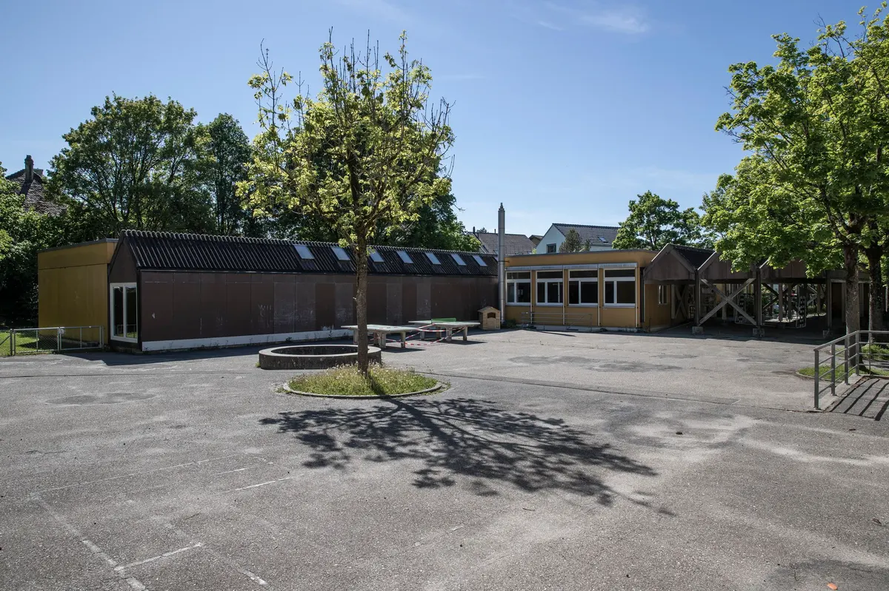
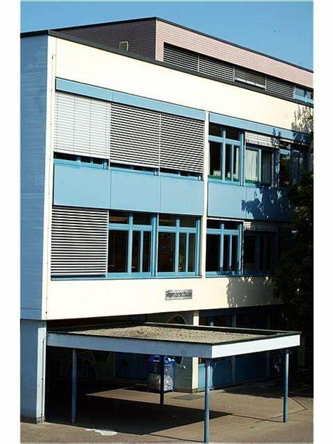
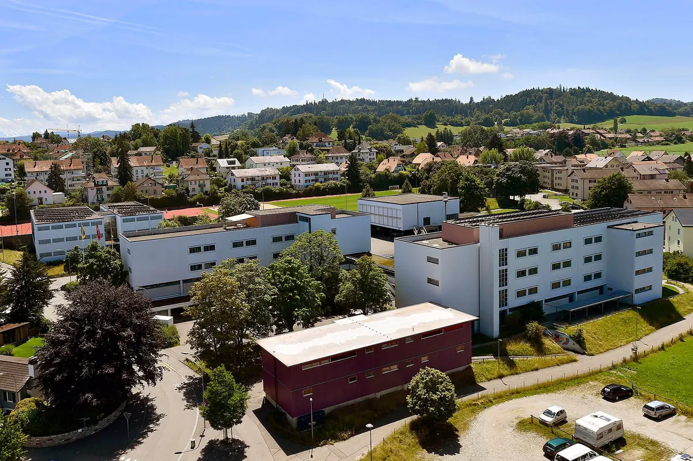
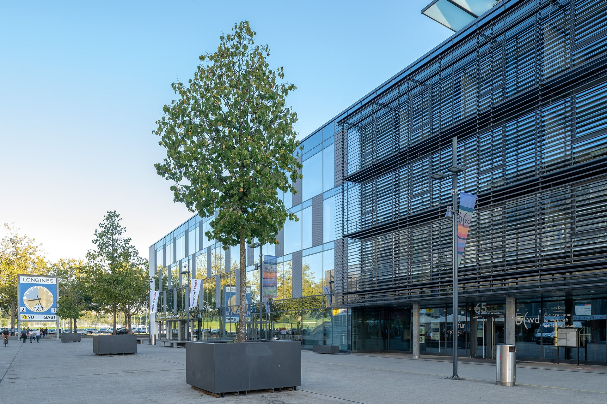

Meine Ausbildung startete 2012 im Kindergarten in Burgdorf. Ich habe nicht mehr all
Erinnerungen da ich 4-6 war, jedoch weiss ich noch das ich dort 2 von meinen besten
Freunden gefunden habe. Damals war ich noch ein ziemlicher chaot und vorallem
durch das was mir erzählt wird realisiere ich es immer wieder. Von dem was mir
noch bleibt, war diese Zeit eine sehr schöne Zeit und meine Lehrerin war auch sehr
nett auch wenn sie während dem 2ten Jahr aufhören musste wegen einer Schwangerschaft.
Von der Klasse kann ich mich nebst den 2 Freunden auch an kaum jemanden erinnern.

In der Primarstufe war ich in der Primarschule Gsteighof die auch in Burgdorf liegt
dort fing ich im Jahre 2014 mit mit der Schule an und blieb auch dort bis zum ende
der Primarschul Zeit. Wir wechselten dort jede 2 Jahre Lehrkraft und ich machte auch
viele neue Freundschaften in dieser zeit. Natürlich waren dort auch Leute aus meinem
Kindergarten, unter welchen meine 2 besten Freunde zur Zeit waren. Die Klasse veränderte
sich stehts, da viele Leute wiederholten, umzogen oder sogar übersprungen haben.
zu dieser Zeit ging ich gar nicht gern in die Schule da ich in der Meinung war und immernoch
bin, das die Lehrer nicht nett waren und der Stoff damals nicht schwierig war.

Nachdem ich die Primarstufe beendet habe bin ich im gleichen Schulhaus auch noch
in die Oberstufe. Dort verweilte ich 3 Jahre nämlich von 2021-2024. Diese 3 Jahre
haben mich stark geprägt auch wenn ich die Schulzeit nicht so toll fand, muss
ich jedoch zugeben das sie spassig war und ich wieder einige neue Freunde
finden Konnte. in der 7ten kam ich in eine ganz neue Klasse auch wenn ich schon
ein paar kannte. Ich fand mich ziemlich schnell zu recht und unsere Lehrerin
welche nun Schulleiterin war, hat auch dabei geholfen. Meine Klasse wurde nach der
8ten Klasse jedoch aufgelöst und in die anderen 3 Klassen verteilt, ich hatte Glück
und wurde in meine gewünschte klasse eingeteilt, jedoch sind viele meiner freunde in
eine andere Klasse. Zusammenfassend war es eine schöne Zeit mit vielen Stolpersteinen

Momentan bin ich an meiner 4 Jährigen Ausbildung der Informatiker Mittelschule dran. Ich
fing dieses Jahr mit der Ausbildung aus und freue mich schon auf die weiteren jahre
bei denen ich mehr über die Informatik lernen kann. Ich gehe sowohl in die BWD, welche
in Wankdorf liegt, also ein recht langer weg wenn man überlegt das ich früher nur 7 Minuten
hatte um in die Schule zu gelangen. Parallel zur BWD besuche ich auch noch die Gibb, bei der
ich mehr über die Praxis des Berufes Lerne, nicht wie in der BWD bei der es hauptsächlich
um Allgemeinbildung handelt. Momentan steht es mit meinen Noten ziemlich gut und ich erhoffe mir das dies auch so bleibt. Ich habe mich schon sehr in die Klasse eingelebt und viele
Bekanntschaften gemacht.